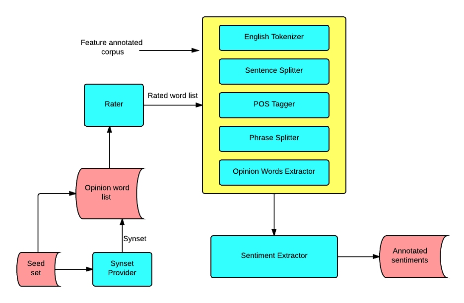

The sentiment Analysis module is responsible of extracting positive and negative sentiments in customer reviews with respect to the features of the products and measure the positivity and negativity of the sentiment.
These are words which are used to express opinions in customer reviews. In our module we have identified a set of opinion words frequently used in customer reviews which is known as seed set. Seed set is divided in to four categories namely, affect_good, affect_bad,affect_good_scale and affect_bad_scale. The affect_good list contains a set of opinion words which are always positive.(e.g. good, great, superb etc.). The affect_bad list contains a set of opinion words which are always negative. (e.g. bad,disgusting,disappointed etc.). The affect_good_scale and affect_bad_scale are different from the other two lists. The opinion words in those two lists can not be differentiate as positive or negative since it will vary depending on the product. (e.g. high, low, thin, big etc.).
When finding opinion words in customer reviews, We use WordNet to evolve the the seed set by taking synonym set of each word in seed set. By that we are able to find the opinion words as much as possible in customer reviews.
To measure the positivity and negativity of opinion words we use a rating system. Each opinion word is given a rate and these rates are used to measure the positivity and negativity of customers' sentiments. These ratings are calculated using SentiWordNet and star ratings of reviews.
We use rule based method to extract sentiments in reviews. Since there are more than one sentiment is included in a single sentence we chunked the sentences in to phrases. It is very rare to find more than one sentiment in one phrase. Therefore it is assumed that one phrase contains only one sentiment.
Following diagram shows the architectural overview of the Sentiment Analysis module.
The inputs to the module are rated Opinion words and feature annotated corpus. Output of the module is the annotated corpus with sentiments. Opinion words are rated using SentiWordNet data and star ratings of customer reviews. Module input is provided to a sentiments extraction components pipeline. This pipeline includes English Tokenizer, Sentence Splitter, POS Tagger, Phrase Splitter and Opinion Words Extractor. Opinion word extractor annotate the opinion words in the corpus which is lately used by the sentiment extractor. When the annotated documents are provided to the Sentiment Extractor, it is capable of extracting phrases with sentiments. Opinion direction is decided by opinion words list categories. (e.g. if a word from affect_good list is in a phrase with a feature it is identified as a positive phrase and opinion word's rate is given to the sentiment's rate.)